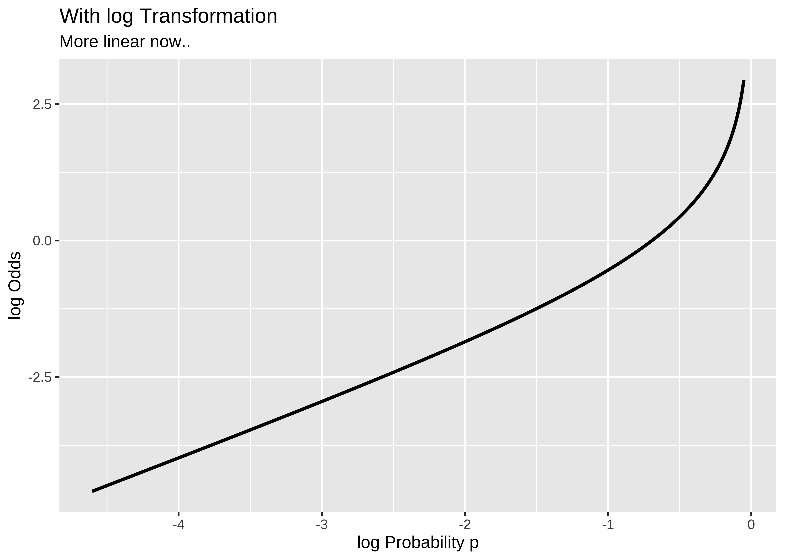
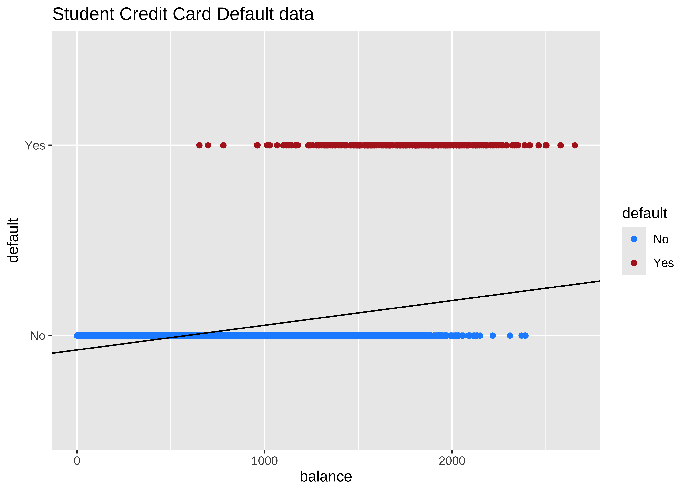
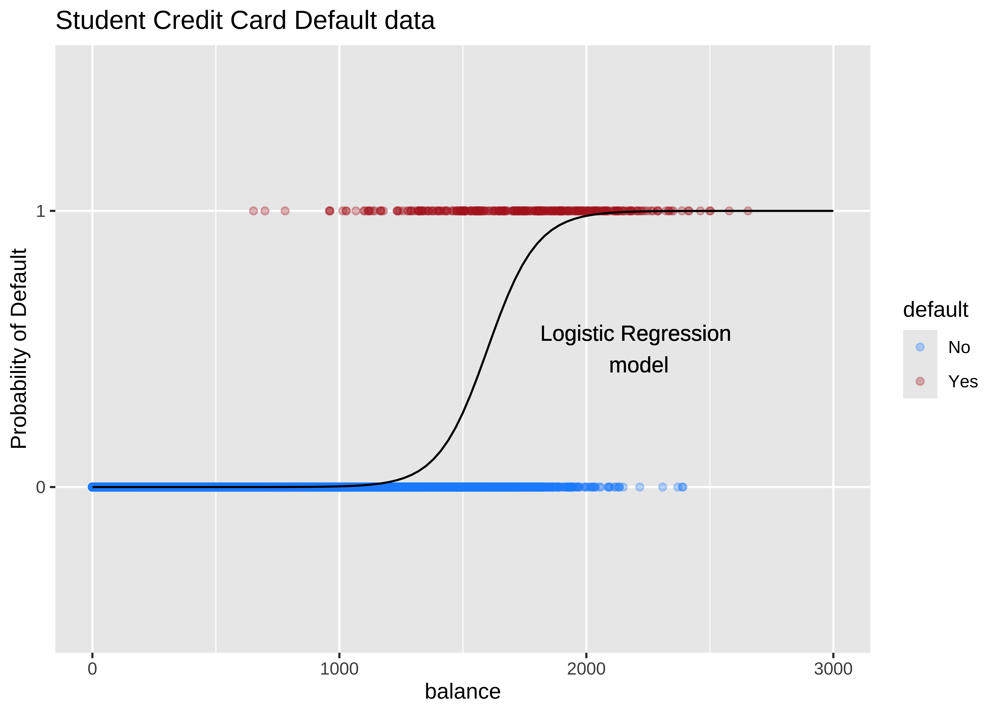
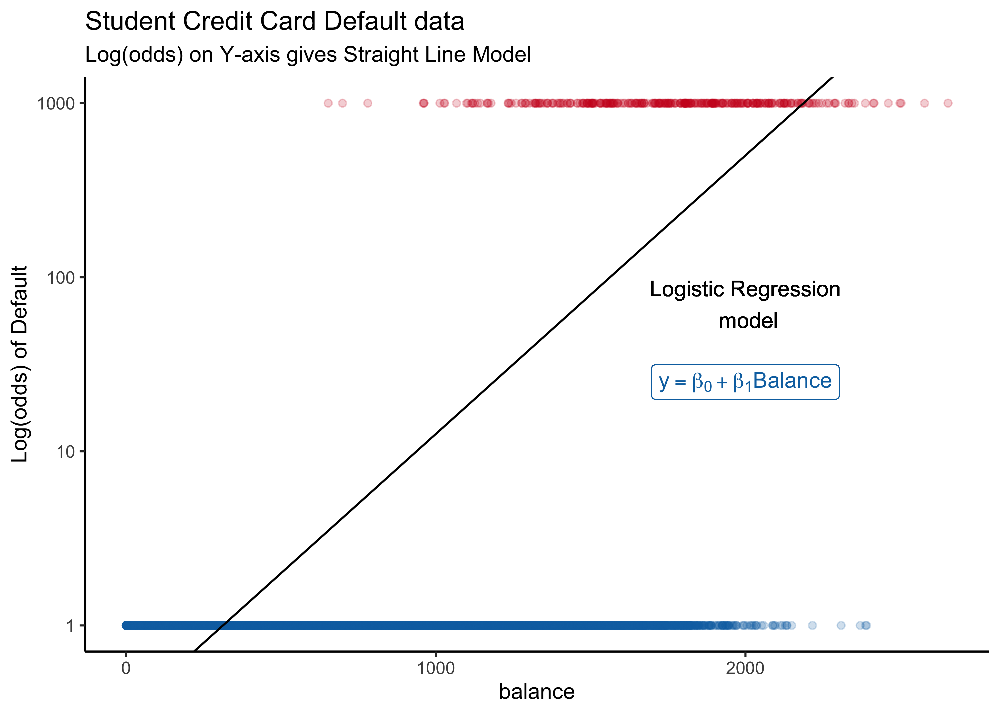

knitr::opts_chunk$set(warning = FALSE,message = FALSE)
library(tidyverse)
library(ggformula)
library(mosaic)
library(infer)
library(regressinator) # pedagogic tool for GLMs
library(GLMsData) # Datasets from Dunn and Smyth
library(HSAUR3) # Datasets from Everitt and Hothorn
library(prettyglm)
# remotes::install_github("UCLATALL/JMRData")
# library(JMRData)Modelling with Logistic Regression
Logistic Regression
Qualitative Variable
Probability
Odds
Log Transformation
Sometimes the dependent variable is an either/or categorization. For example, the variable we want to predict might be won or lost the contest, has an ailment or not, voted or not in the last election, or graduated from college or not. There might even be more than two categories such as voted for Congress, BJP, or Independent; or never smoker, former smoker, or current smoker.
We saw with the general linear model that it models the mean of a target Quantitative variable as a linear weighted sum of the predictor variables:
y \sim N(x_i^T * \beta, ~~\sigma^2)
This model is considered to be general because of the dependence on potentially more than one explanatory variable, v.s. the simple linear model:1 y = \beta_0 + \beta_1*x_1 + \epsilon. The general linear model gives us model “shapes” that start from a simple straight line to a p-dimensional hyperplane.
Although a very useful framework, there are some situations where general linear models are not appropriate:
- the range of Y is restricted (e.g. binary, count)
- the variance of Y depends on the mean (Taylor’s Law)2
How do we use the familiar linear model framework when the target/dependent variable is Categorical?
Linear Models for Categorical Targets?
Recall that we spoke of dummy **predictor** variables for our linear models and how we would dummy code them using numerical values, such as 0 and 1, or +1 and -1. Could we try the same way for a target categorical variable?
Y_i = \beta_0 + \beta_1*Xi + \epsilon_i\\ \nonumber where\\ \begin{align} Y_i &= 0 ~ if ~ "No"\\ \nonumber &= 1 ~ if ~"Yes" \nonumber \end{align}
Sadly this seems to not work for categorical dependent variables using a simple linear model as before. Consider the Credit Card Default data from the package ISLR.
Rows: 10,000
Columns: 4
$ default <fct> No, No, No, No, No, No, No, No, No, No, No, No, No, No, No, No…
$ student <fct> No, Yes, No, No, No, Yes, No, Yes, No, No, Yes, Yes, No, No, N…
$ balance <dbl> 729.5265, 817.1804, 1073.5492, 529.2506, 785.6559, 919.5885, 8…
$ income <dbl> 44361.625, 12106.135, 31767.139, 35704.494, 38463.496, 7491.55…We see balance and income are quantitative predictors; student is a qualitative predictor, and default is a qualitative target variable. If we naively use a linear model equation as model = lm(default ~ balance, data = Default) and plot it, then…

…it is pretty much clear from Figure 1 that something is very odd. (no pun intended! See below!) If the only possible values for default are No = 0 and Yes = 1, how could we interpret predicted value of, say, Y_i = 0.25 or Y_i = 1.55, or perhaps Y_i = -0.22? Anything other than Yes/No is hard to interpret!
Where do we go from here?
Let us state what we might desire of our model:
-
Model Equation: Despite this setback, we would still like our model to be as close as possible to the familiar linear model equation.
- Predictors and Weights: We have quantitative predictors so we still want to use a linear-weighted sum for the RHS (i.e predictor side) of the model equation.
And for the LHS (i.e the target side)?
- Probability: What can we try? Even though we are interested in binary outcomes, we might try to use probability of the outcome as our target. However, this still leaves us with a range of [0,1] for the target variable, as before. How about odds of the outcome, instead of trying to predict the outcomes directly (Yes or No), or their probabilities [0,1]?
Odds
Odds of an event with probability p of occurrence is defined as Odds = p/(1-p). As can be seen, the odds are the ratio of two probabilities, that of the event and its complement. In the Default dataset just considered, the odds of default and the odds of non-default can be calculated as:
\begin{align} OddsDefault &=p(noDefault)/(1-p(noDefault))\\ \nonumber &= 0.9667/(1-0.9667)\\ \nonumber &= 29.0303\\ \end{align}
and OddsNoDefault = 1/29.0303 = 0.03444709.
Now, odds cover the entire real number line, i.e. [-\infty, \infty] ! Clearly, when the probability p of an event is 0, the odds are -\infty…and when it nears 1, the odds tend to \infty. So we have transformed a simple probability that lies between [0,1] to odds lying between [-\infty, \infty]. That’s a great step towards making a linear model possible; we have “removed” the limits on our linear model’s prediction range by using Odds as our target variable.
-
Error Distributions with Odds targets: Odds are a necessarily nonlinear function of probability; the slope of
Odds ~ probabilitydepends upon the probability itself. So a percentage change in the Odds would lead to different amounts of change in the probabilities, depending on the value of the probability.


To understand this issue intuitively, consider what happens to, say, a 5% change in the odds ratio near 1.0 compared to more extreme odds ratios, Figure 2 (a) . If the odds ratio is 1.0, then the probabilities p and 1-p are 0.5, and 0.5. A 20% increase in the odds ratio to 1.20 would correspond to probabilities of 0.545 and 0.455. However, if the original probabilities were 0.9 and 0.1 for an odds ratio 9, then a 20% increase to 10.8 would correspond to probabilities of 0.915 and 0.085, a much smaller change in the probabilities. Hence, extreme probabilities (near 1 or 0) are more stable (i.e., have less error) than middle probabilities.
This should remind us of the LINE assumptions in linear regression where we assume that the errors (in prediction) are normally distributed with common variance, across different values of the independent/predictor variable. The solution to this heteroscedasticity problem is similar here to what we discussed there: the log transformation, Figure 2 (b). This transformation works because it makes the same percentage changes equivalent no matter what the starting value of the odds or the probabilities; logs convert multipliers/divisors to sums/differences and the graph is linear for the most part.
So in our model, instead of modeling odds as the dependent variable, we will use log(odds), also known as the logit, defined as:
\begin{align} log(odds_i) &= log[(p_i)/(1-p_i)]\\ \nonumber &= logit(p_i)\\ \end{align}
Binomially distributed target variable
In linear regression, we assume a normally distributed target variable. With a categorical target variable with two levels 0 and 1 it would be impossible for the errors e_i = Y_i - \hat{Y_i} to have a normal distribution, as assumed for the statistical tests to be valid. The errors are bounded by [0,1]! One candidate for the error distribution in this case is the binomial distribution, whose mean and variance are p and np(1-p) respectively. Note immediately that the variance moves with the mean! So the model has “built-in” heteroscedasticity, which we need to counter with transformations such as the log() function. More on this later.
-
Estimation of Model Parameters: The last problem to solve is that because we have made so many transformations to get to the
logitsthat we want to model, the logic of minimizing the sum of squared errors(SSE) is no longer appropriate.
Note
The probabilities for default are 0 and 1…the log(odds) will map respectively to -\infty and \infty. So if we naively try to take residuals, we will find that they are all \infty !! Hence SSE cannot be computed and we need another way to assess the quality of our model.
Instead, we will have to use maximum likelihood estimation(MLE) to estimate the models, and we will use the X^2 (“chi-squared”) statistic instead of t and Fto evaluate the model comparisons. The maximum likelihood method maximizes the probability of obtaining the data at hand against every choice of model parameters \beta_i.
This is our Logistic Regression Model, which uses a Quantitative Predictor variable to predict a Categorical target variable. We write the model as ( for the Default dataset:
\begin{align} logit(default) & = \beta_0 + \beta_1 * balance&\\ \nonumber log(p(default)/(1-p(default))) & = \beta_0+\beta_1 * balance&\\ \nonumber therefore\\ p(default) & = \frac{exp(\beta_0 + \beta_1 * balance)}{1 + exp(\beta_0 + \beta_1 * balance)}\\ \end{align}
From the Eqn.4 above it should be clear that a unit increase in balance should increase the odds of default by \beta_1 units.
The RHS of Eqn.5 is a sigmoid function of the weighted sum of predictors and is limited to the range [0,1]. The parameters \beta_i need to be estimated using maximum likelihood methods.



Let us now read in the data and check for these assumptions as part of our Workflow.
Research Question
How do we predict the price of a house in Boston, based on other parameters Quantitative parameters such as area, location, rooms, and crime-rate in the neighbourhood?
quantitative variables:
name class min Q1 median Q3 max mean sd n
1 Hours integer 400 1600.0 2600 3600 4600 2581.818182 1357.80572 11
2 Turbines integer 13 33.5 39 41 73 39.272727 14.79250 11
3 Fissures integer 0 4.5 7 15 22 9.636364 7.97838 11
missing
1 0
2 0
3 0glimpse(turbines)Rows: 11
Columns: 3
$ Hours <int> 400, 1000, 1400, 1800, 2200, 2600, 3000, 3400, 3800, 4200, 46…
$ Turbines <int> 39, 53, 33, 73, 30, 39, 42, 13, 34, 40, 36
$ Fissures <int> 0, 4, 2, 7, 5, 9, 9, 6, 22, 21, 21skimr::skim(turbines)| Name | turbines |
| Number of rows | 11 |
| Number of columns | 3 |
| _______________________ | |
| Column type frequency: | |
| numeric | 3 |
| ________________________ | |
| Group variables | None |
Variable type: numeric
| skim_variable | n_missing | complete_rate | mean | sd | p0 | p25 | p50 | p75 | p100 | hist |
|---|---|---|---|---|---|---|---|---|---|---|
| Hours | 0 | 1 | 2581.82 | 1357.81 | 400 | 1600.0 | 2600 | 3600 | 4600 | ▅▅▅▅▇ |
| Turbines | 0 | 1 | 39.27 | 14.79 | 13 | 33.5 | 39 | 41 | 73 | ▂▇▇▂▂ |
| Fissures | 0 | 1 | 9.64 | 7.98 | 0 | 4.5 | 7 | 15 | 22 | ▇▇▅▁▇ |
WIP
WIP
WIP
WIP
So our Linear Modelling workflow might look like this: we have not seen all stages yet, but that is for another course module or tutorial!
flowchart TD
A[(A: Data)] -->|mosaic + ggformula|B[B:EDA]
B --> |corrplot + corrgram + ggformula + purrr + cor.test| C(C: Check Relationships)
C --> D[D: Decide on Simple/Complex Model]
D --> E{E: Is the Model Possible?}
E --> |Yes| G[G: Build Model]
E -->|Nope| F[F: Transform Variables]
E -->|Nope| K[K: Try Multiple Regression <br> and/or Interaction Terms]
K --> D
F --> D
G --> H{H: Check Model Diagnostics}
H --> |Problems| D
H --> |All good| I(Interpret Your Model)
I --> J(((Apply the Model for Predictions)))
Judd, Charles M. & McClelland, Gary H. & Ryan, Carey S. Data Analysis: A Model Comparison Approach to Regression, ANOVA, and Beyond. Routledge, Aug 2017. Chapter 14.
https://yury-zablotski.netlify.app/post/how-logistic-regression-works/
https://uc-r.github.io/logistic_regression
https://francisbach.com/self-concordant-analysis-for-logistic-regression/
https://statmath.wu.ac.at/courses/heather_turner/glmCourse_001.pdf
https://jasp-stats.org/2022/06/30/generalized-linear-models-glm-in-jasp/
Dunn, Peter K., and Gordon K. Smyth. 2022. GLMsData: Generalized Linear Model Data Sets. https://CRAN.R-project.org/package=GLMsData.
Fowler, Jared. 2023. prettyglm: Pretty Summaries of Generalized Linear Model Coefficients. https://CRAN.R-project.org/package=prettyglm.
Hothorn, Torsten, and Brian S. Everitt. 2023. HSAUR3: A Handbook of Statistical Analyses Using r (3rd Edition). https://CRAN.R-project.org/package=HSAUR3.
Reinhart, Alex. 2023. regressinator: Simulate and Diagnose (Generalized) Linear Models. https://CRAN.R-project.org/package=regressinator.
Wilke, Claus O., and Brenton M. Wiernik. 2022. ggtext: Improved Text Rendering Support for “ggplot2”. https://CRAN.R-project.org/package=ggtext.
Footnotes
Citation
BibTeX citation:
@online{venkatadri2023,
author = {Venkatadri, Arvind},
title = {Modelling with {Logistic} {Regression}},
date = {2023-04-13},
url = {https://av-quarto.netlify.app/content/courses/Analytics/Modelling/Modules/LogReg/logistic.html},
langid = {en}
}
For attribution, please cite this work as:
Venkatadri, Arvind. 2023. “Modelling with Logistic
Regression.” April 13, 2023. https://av-quarto.netlify.app/content/courses/Analytics/Modelling/Modules/LogReg/logistic.html.